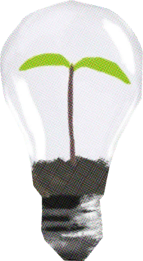
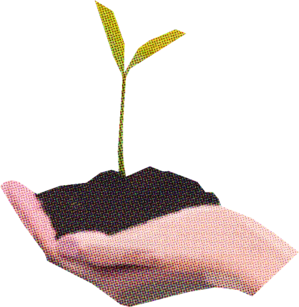

Misión y Visión

🎯 Misión
Diseñar soluciones tecnológicas accesibles que combinen inteligencia artificial, visión artificial y electrónica para facilitar la clasificación correcta de residuos y promover la conciencia ambiental.

🌍 Visión
Demostrar que la inteligencia artificial puede usarse de forma positiva para el planeta, y que un sistema como SmartBin AI llegue a usarse en colegios, hogares y espacios públicos.
Valores
🌱 Compromiso ambiental💡 Innovación📚 Educación🤝 Trabajo en equipo🔬 Honestidad científica
Nuestro equipo
Cristopher Alvarez
Colaborador/a
Hector Rosales
Colaborador/a
Lucía López
Colaborador/a
Malory Salazar
Colaborador/a
Paula García
Colaborador/a
Matriz de impacto sociocultural
| Ámbito | Impacto esperado |
|---|---|
| 🌿 Ambiental | Menos residuos reciclables mezclados con basura común y menos basura en vertederos. |
| ❤️ Salud | Reducción de la contaminación por residuos sólidos que afecta la salud de las personas. |
| 🎓 Educativo | Integra programación, electrónica e IA, y enseña a separar los residuos correctamente. |
| 🏫 Social | Fomenta la conciencia ambiental en el colegio, el hogar y los espacios públicos. |